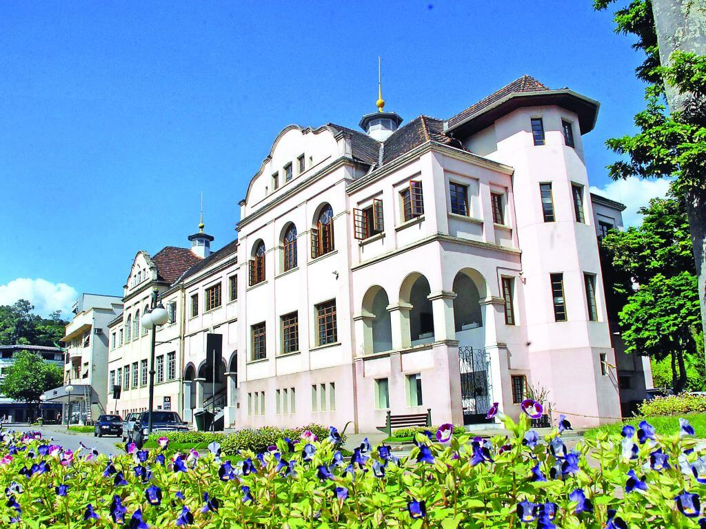

Featured Destinations in Blumenau Sc Brazil
-
Parque Vila Germanica

This is a large park in the center of Blumenau that is perfect for a picnic or a stroll. It features a lake, gardens, and a playground for children.
-
Museu de Arte de Blumenau
This museum has a wide range of exhibits showcasing the art and culture of the region. It's a great place to learn about the history of the city and the state of Santa Catarina.
-
Oktoberfest

Blumenau is known for its Oktoberfest celebration, which takes place in October. Visitors can enjoy traditional German food, music, and beer.
-
Mercado Municipal
This market offers a variety of local produce and crafts. Visitors can buy souvenirs and try local specialties.
-
Catedral de Blumenau

This beautiful cathedral is a great place to visit if you're interested in architecture. It's located in the center of the city and features a mix of Gothic and Romanesque styles.
Recent Reviews
-
Hotel X, Paris

I recently stayed at Hotel X in Paris and had a fantastic experience. The staff was friendly and the room was comfortable. I would definitely stay here again.
-
Restaurant Y, Santorini

I had dinner at Restaurant Y in Santorini and it was amazing. The food was delicious and the views of the sunset were breathtaking. I highly recommend it.
-
Spa Z, Bali

I had a spa day at Spa Z in Bali and it was truly relaxing. The massage was excellent and the atmosphere was serene. I left feeling refreshed and rejuvenated.